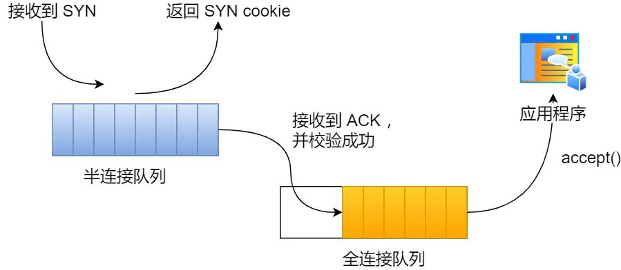

TCP半连接和全连接队列
一、TCP半连接队列和全连接队列
在TCP三次握手的时候，Linux内核会维护两个队列，分别是：
半连接队列：也称为SYN队列。
全连接队列：也称为accept队列。
服务端收到客户端发起的SYN请求后，内核就会把该连接存储到半连接队列中，并向客户端响应响应SYN+ACK，接着客户端会返回ACK，服务端收到三次握手的ACK后，内核会把链接从半连接队列中移除，然后创建新的完全的连接，并将连接添加到accept队列中，等待进程调用accept函数后把链接取出来。

不管是半连接队列还是全连接队列，都有最大长度限制，超过限制时，内核会直接丢弃，或返回RST包。
TCP全连接队列溢出
如何知道应用程序的TCP全连接队列的大小？
在服务端可以使用ss命令，来查看TCP全连接队列的情况：
但是需要注意的是，ss命令获取的是Recv-Q/Send-Q在LISTEN状态和非LISTEN状态所表达的含义是不同的，内核代码为：
在LISTEN状态时，Recv-Q/Send-Q表示的含义如下：
Recv-Q：当前全连接队列的大小，也就是当前已完成三次握手并等待服务端accept()的TCP连接。
Send-Q：当前全连接最大队列长度，上面的输出结果说明监听8088端口的TCP服务，最大全连接长度为128。
在非LISTEN状态时，Recv-Q/Send-Q表示的含义如下：
Recv-Q：已收到但未被应用进程读取的字节数。
Send-Q：已发送但未收到确认的字节数。
模拟TCP全连接队列溢出的场景
环境：
客户端和服务端都是Linux CentOS6.5，内核版本为2.6.32。
服务单IP 192.168.3.200，客户达unsigneIP192.168.3.100。
服务端是Nginx服务，端口为8088。
这里先介绍下wrk工具，是一款简单的HTTP压测工具，能够在单机多核CPU的条件下，使用系统自带的性能I/O机制，通过多线车工和事件模式，对目标机器产生大量的负载。
本次模拟实验就使用wrk工具来压测服务端，发起大量的请求，一起看看服务端TCP全连接队列满了会发生什么？有什么观察指标？
客户端执行wrk命令都对服务端发起压测，并发3w个连接：

在服务端可以使用ss命令，俩查看当前TCP全连接队列的情况：
期间共执行了两次ss命令，从上面的输出结果，可以发现当前TCP全连接队列上升到了129个，超过了TCP全连接队列。
当超过了TCP最大全连接队里额，服务端则会丢掉后续进来的TCP连接，丢掉的TCP连接的个数会被统计起来我们可以使用netstat -s命令来查看。
上面可以看到41159times，表示全连接队列溢出的次数，注意这个是累计值，可以隔几秒在执行一次，这个数字一直增加的话说明全连接队列偶尔满了。
从上面的模拟结果看可以看到，当服务端并发处理大量请求的时候，如果TCP全连接队列过小，就容易溢出。发生TCP全连接队列溢出的时候，后续的请求就会被丢弃，这样就会出现服务端请求数量上不去的现象。

Linux有个参数可以指定TCP全连接队列满了会使用什么策略来回应客户端。
实际上，丢弃连接只是Linux的默认行为，我们可以通过设置可以选择向客户端发送RST复位报文，告诉客户端连接已经连接已经建立失败。
tcp_abort_on_overflow有两个值分别是0和1，代表：
0：全连接队列满了，那么server扔掉client发过来的ack。
1：全连接队列满了，server发送一个reset包给client，表示废掉这个握手过程和这个连接。
如果想要知道客户端连接不上服务端，是不是服务端TCP全连接队列满的原因，那么可以把tcp_abort_on_overflow设置为1，这时如果在客户端异常中可以看到很多connection resert by peer的错误，那么就可以证明是由于服务端的TCP全连接队列溢出的问题。
通常情况下，应当把tcp_abort_on_overflow设置为0，因为这样更有利于应对突发流量。
举例子说明，当TCP全连接队列满了，导致服务端求掉了ACK，于此同时，客户端的连接状态缺失ESTABLISHED，进程就在建立好的连接上发送请求，只要服务端没有请求回复ACK，请求就会被多次重发，如果服务器上的进程只是短暂的繁忙造成accept队列满了，那么当TCP全连接队列有空的时候，再次接收请求的报文由于包含ACK，仍然会触发服务端成功建立连接。
所以，tcp_abort_on_overflow设置为0，可以提高连接建立的成功率，只有当非常肯定TCP全连接队列会长期溢出的时候，才能设置为1，尽快通知客户端。
如何增大TCP全连接队列呢？
是的，当发现TCP全连接队列发生溢出的时候，我们就需要增带该连接的大小，以便可以应对客户端大量的请求。
TCP全连接队列的最大值取决于somaxconn和backlog之间的最小值，也就是min(somaxconn, backlog)从下面的内核代码可以看到：
somaxconn：是Linux内核的参数，默认值是128，可以通过/proc/sys/net/core/somaxconn来设置值。
backlog：是listen(int sockfd, int backlog)函数中的backlog的大小，Nginx默认值是511，可以通过修改配置文件来设置长度。
所以测试环境的TCP全连接队列最大值是min(128 , 511)也就是128，可以通过ss命令来查看：
我们将全连接队列值设置为5000从新来看下实验结果：
接着把Nginx的backlog也设置为5000。
最后要重启Nginx服务。因为只有重新调用lietn()函数TCP全连接队列才会重新初始化。
重启完Nginx服务后，服务端执行ss命令，查看TCP全连接队列的大小：
从执行结果，可以发现TCP全连接的最大值是5000。
继续执行压测，客户端同样以3w个连接并发请求给服务端：
服务端执行ss命令，查看TCP全连接的情况：
从上面的执行结果看到，全连接队列使用的增长很快，但是一直没有超过最大值，所以就不会溢出，那么netstat -s就不会有TCP全连接队列溢出的个数显示：

说明TCP全连接队列最大值从128增大到5000后，服务端抗住了3w连接并发请求，也没有发生全连接队列溢出的现象了。
如果持续不断的有连接是因为TCP全连接队列溢出被废弃了，就应该调大backlog以及somaxconn的参数。
TCP半队列溢出
查看TCP半连接队列长度
针对TCP半连接队列的长度没有像去哪连接队列那样可以可以用ss命令来查看。
但是我们可以抓住TCP半连接的特点，就是服务端处于SYN_RECV的状态的TCP连接，就是TCP半连接队列。于是，我们可以使用如下命令来计算当前TCP半连接的长度：
模拟TCP半连接队列溢出的情况：
模拟TCP半连接溢出的场景也不难，实际上就是服务单一直发送TCP SYN包，但是不回第三次握手ACK，这样就使得服务端有大量处于SYN_RECV状态的TCP连接。
其实也就是SYN洪泛、SYN攻击、DDos攻击。
环境：
客户端和服务端都是Linux CentOS6.5，内核版本为2.6.32。
服务单IP 192.168.3.200，客户达unsigneIP192.168.3.100。
服务端是Nginx服务，端口为8088。
注意：本次模拟实验没有开启tcp_syncookies。
本次实验使用的hping3工具来模拟你SYN攻击。
当服务端收到SYN攻击后，连接服务端的ssh就会断开了，就无法再连接上了，只能在服务端主机上执行查看当前TCP半连接队列的大小。
同时，可以通过netstat -s观察半连接队列溢出的情况：
上面输出的都是累计值，表示共有多少个TCP连接因为半连接队列溢出而丢弃的。哥几秒执行几次，如果有上升的趋势，说明当前存在的半连接队列溢出的现象。
tcp_max_syn_backlog指的就是半连接的大小么？
不是的，半连接队列的大小不仅跟tcp_max_syn_backlog参数有关，还跟其他的参数也有关系。
上面模拟的SYN攻击场景时，服务端的tcp_max_syn_backlog的默认值如下：
但是在测试的时候发现，服务端最多也就只有256个半连接，而不是512。因此印证了上面的结论。
分析下TCP半连接的最大值是如何指定的：
TCP第一次握手（收到SYN包）的Linux内核代码如下，其中缩减了大量的额代码，只需要重点关注下TCP半连接的溢出处理逻辑：
源码上可以看到，有三个条件因为队列长度的关系而被丢弃的：

如果半连接队列满了，并且没有开启tcp_syncookies则会丢弃。
如果全连接队列满了，且没有重传SYN+ACK包连接请求对于1个，则会丢弃。
如果没有开启tcp_syncookies，并且max_syn_backlog减去当前半连接长度小于（max_syn_backlog>>2）则会丢弃。
关于tcp_syncookies就是为了缓解SYN攻击的一种手段。
我们看下检测半连接队列是否满inet_csk_reqsk_queue_is_full和检测全连接队列是否满的函数sk_acceptq_is_full。
全连接队列的最大值是 sk_max_ack_backlog变量，sk_max_ack_backlog实际上是在listen()源码指定的，也就是min(somaxconn, backlog)。
半连接队列的最大值是max_qlen_log变量，我们来看下amx_qlen_log变量时在哪儿设置的：
可以看到，我们可以计算出max_qlen_log是8，于是带入到检测到半连接队列是否满的函数是reqsk_queu_is_full：
也就是qlen>>8，什么时候为1就代表半连接队列满了，计算不难，但是很明显qlen为256的时候，256>>8 = 1。
至此，我们可以知道SYN攻击的时候服务端处于SYN_RECV练级最大只有256个了。
可见，半连接队列的最大值不仅仅和max_syn_backlog决定还跟somaxconn和backlog有关系。
在Linux内核2.6.32内核版本中我们可以大概看下：
当max_syn_backlog > min(somaxconn, backlog)时，半连接队列最大值max_qlen_log= min(somaxconn, backlog) * 2。
当max_syn_backlog < min(somaxconn, backlog)时，半连接队列最大值是max_qlen_log = max_syn_backlog * 2。
半连接队列最大值max_qlen_log就代表服务端处于SYN_RECV转改的最大个数么？
不是的，我们可以看到，max_qlen_log是理论上半连接的最大值，但是不一定代表服务端处于SYN_RECV状态的最大个数。
在前面我们知道，TCP第一次握手的时候会被丢弃的三种条件：
如果半连接队列满了，并没有开启tcp_syncookies的时候就会丢弃。
如果全连接队列满了，并且没有重传SYN+ACK包的连续请求多于1次的时候就会被丢弃。
如果没有开启tcp_syncookies，并且max_syn_backlog减去当前半连接长度下小于(max_syn_backlog >> 2)则会丢弃。
假设条件1当前半连接的长度没有超过理论的半连接队列的最大值max_qlen_log，那么如果调剂爱你3成立，则依然丢弃SYN包，也就使得SYN_RECV状态的最大个数不会是理论值max_qlen_log。
做个实验看看：
服务端环境如下：
配置完成之后，服务端要重启Nginx，因为全连接一队列最大值和半连接队列的最大值是在listen()函初始化完成的。
根据前面的源码分析，我们可以计算出来max_qlen_log的最大值是256。
客户端执行hping3发起SYN攻击：
服务端执行命令，查看SYN_RECV状态的最大个数：
可以发现，服务端处于SYN_RECV状态的最个个数并不是max_qlen_log变量的值。
这就是前面说的原因：如果当前半连接的长度没有超过理论半连接队列的最大值max_qlen_log，那么如果条件3成立的话，则依然会丢弃SYN包的，也就使得服务端处于SYN_RECV状态的最大个数不会是理论值的max_qlen_log。
看下条件3，如果没有开启tcp_syncookies，并且max_syn_backlog减去当前半连接长度下小于(max_syn_backlog >> 2)则会丢弃。
从上面的分析，可以看到，当前半连接idea长度 > 192条件，TCP第一次握手的SYN包是会被丢弃的。
在前面我们测试的结果，服务端处于SYN_RECV状态的最大个数是193，正好是触发了条件3，所以处于SYN_RECV状态的个数还没有到，理论半连接最大值256，就已经把SYN包给丢弃了。
所以服务端处于SYN_RECV状态的最大个数分为2种情况：
如果，当前半连接队列没有超过理论半连接的最大值，但是超过了max_syn_backlog -(max_syn_backlog >> 2)那么处于SYN_RECV状态的最大个数就是max_syn_backlog - (max_syn_backlog >> 2)。
如果当前半连接队列超过理论半连接最大值，那么处于SYN_RECV状态的最大个数就是理论半连接的最大值。
每个Linux内核版本理论半连接最大值计算方式会不同
在内核5.0.0中，理论半连接以最大就是全连接队列的最大值，但依然还是有队列溢出的三个条件：
如果SYN半连接队列已经满了，只能丢弃连接吗？
并不是这样的，开启syncookies功能就可以在不使用SYN半连接队列的情况下成功建立连接，在前面我们的源码分析可以看到这点，当开启了syncookies功能是不会丢弃连接的。
syncookies是这么做的：服务器根据当前状态计算出一个值，放在自己方发出的SYN+ACK报文中，当客户端返回ACK报文的时候，取出该值进行验证，如果合法，就认为连接建立时成功的，如下图所示：

syncookies参数主要有以下三个值：
0：表示关闭。
1：表示仅当SYN半连接队列放不下时才会启用。
2：表示无条件开启功能。
在应对SYN攻击的时候只需要设置为1即可：
如何预防SYN攻击
增大半连接队列。
开启tcp_syncookies功能。
减少SYN+ACK重传次数。
增大半连接队列：要想增大半连接队列，我们不能单纯增大tcp_max_syn_backlog的值还需要增大somaxconn和backlog，也就是增大全连接队列，否则，只单纯增大tcp_max_syn_backlog是无效的。
修改Linnux内核参数：
增大tcp_max_syn_backlog和somaxconn的方法：
增大backlog的方法，每个web服务器不同，比如Nginx增大如下：
最后改变了上面的参数重启Nginx服务。
开启tcp_syncookies功能 修改Linux内核参数：

减少SYN+ACK重传次数：当服务端收到SYN攻击的时候，就会有大量SYN_RECV状态的TCP来呢及，处于这个状态的TCP会重传SYN+ACK当重传此时达到上限之后，就会断开连接。
那么针对SYN攻击的场景，可以减少SYN+ACK的重传此时，来加快处于SYN_RECV状态的TCP连接断开。